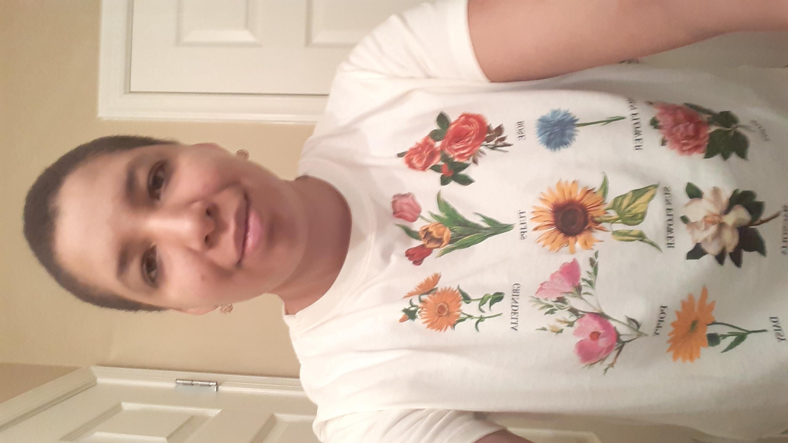

About Me
Hi, my name is Sena Rainey, and I'm a graphic designer from Winchester, VA. In relation to web design, I am proficient in HTML, CSS, JavaScript, responsive design and bootstrap. I am also proficient in Premiere Pro, in which I do short videos about web design. I am currently learning Dreamweaver and WordPress.
About This Site
This website was created as an assignment for the Web Design for Everybody Capstone, where I had to create a portfolio either from scratch or using a framework. I chose to do this site on gardening from scratch to show what I learned using one of my hobbies as an example. It took me a while to do this site, because of recent life events like my mom's death on July 6, 2021. However, I decided to finish it, because I want earn a certificate for the Web Design for Everybody specialization.